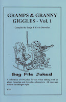
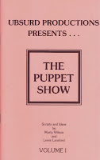

Puppet Scripts
4/13/2009
{kind=link}

Question: Can we use your ventriloquist dialogue books such as Gramps & Granny Giggles for puppet shows? We are starting up a puppet team. If so how many puppets in some plays?
* * * * * *
Answer: Yes, most ventriloquist dialogues can be adapted for use by two puppets from a puppet stage. Gramps & Granny Giggles, however, is not a book of dialogues. Rather, it is a collection of jokes and gags written in dialogue format so performers can add one or more to their favorite dialogues. Here's just one, for example:
F: I've finally reached the METAL age.
V: How's that?
F: I've got GOLD in my teeth, SILVER in my hair, and LEAD in my pants.
The above joke was obviously w
The book, Gramps & Granny Giggles - Vol. 1, is among those I have listed for eBay auctions ending this morning. I also have several Puppet Script books listed. Be sure to check out: The Puppet Show Vols.1 & 3. Click Here
* * * * * *
Answer: Yes, most ventriloquist dialogues can be adapted for use by two puppets from a puppet stage. Gramps & Granny Giggles, however, is not a book of dialogues. Rather, it is a collection of jokes and gags written in dialogue format so performers can add one or more to their favorite dialogues. Here's just one, for example:
F: I've finally reached the METAL age.
V: How's that?
F: I've got GOLD in my teeth, SILVER in my hair, and LEAD in my pants.
The above joke was obviously w
{kind=link}

ritten for use with a gramps or granny puppet, but if you simply change the pronoun the joke can be used by any type/age puppet when referring to someone of the senior crowd. Just as funny or even more so.The book, Gramps & Granny Giggles - Vol. 1, is among those I have listed for eBay auctions ending this morning. I also have several Puppet Script books listed. Be sure to check out: The Puppet Show Vols.1 & 3. Click Here
If auctions have ended, go to: http://www.maherbookstore.blogspot.com/ where you will find all Maher book listings.
Details on The Puppet Show Vols. 1, 2, & 3 can be seen: Here